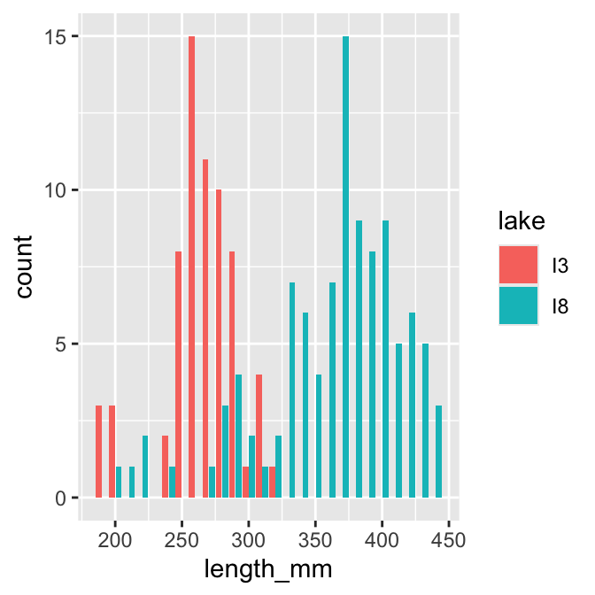
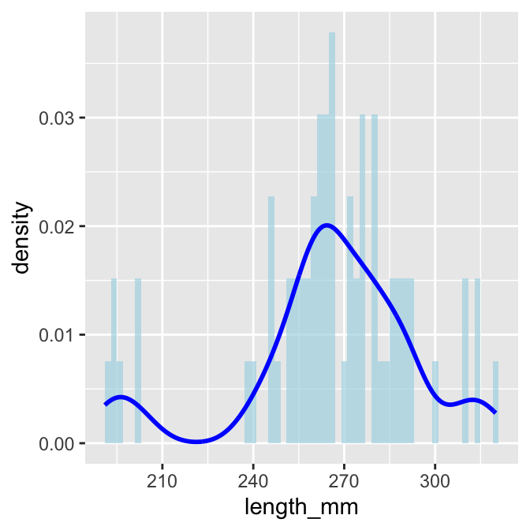
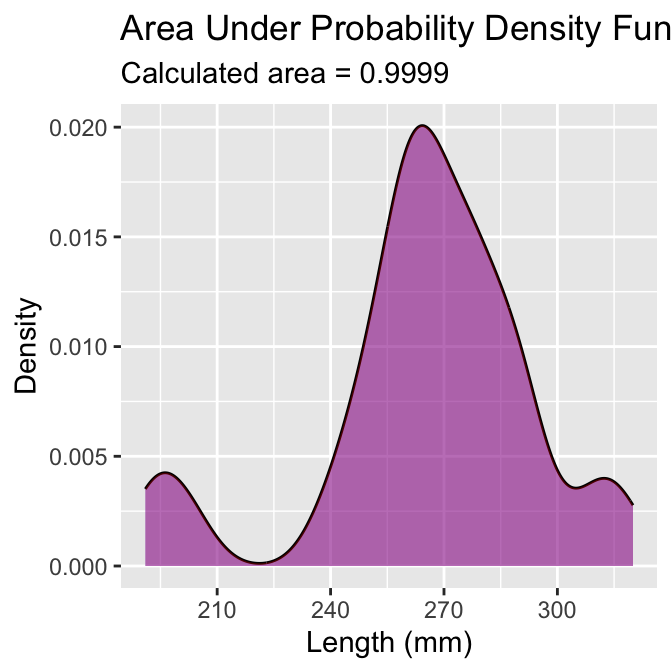
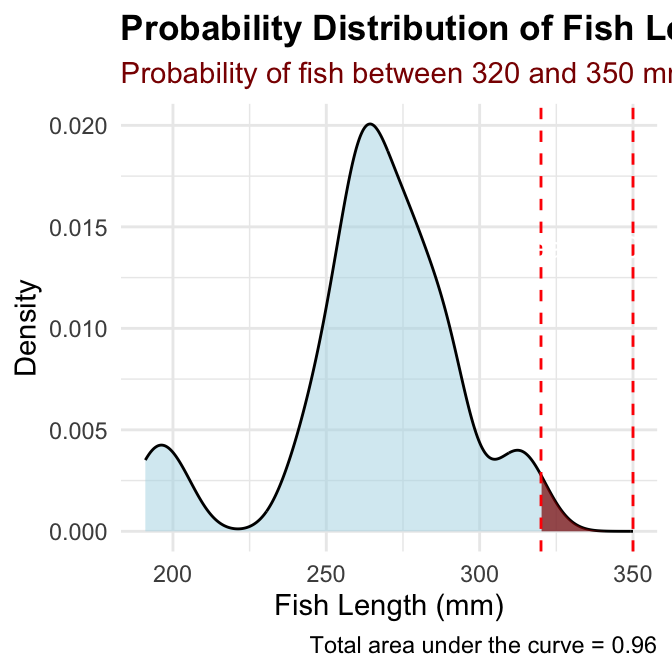
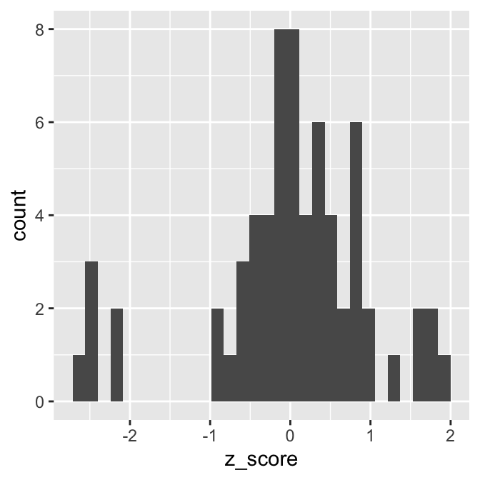

ggplot(data = p_df, aes(x=length_mm, fill = wind)) +geom_histogram( binwidth =2, # sets the width in units of the bins - try different nubmersposition =position_dodge2(width =0.5))
What questions do you have and what is unclear - what did not work so far when you started the homework?
Introduction
In this active learning module, we’ll explore real data from fish populations in Alaska. We’ll focus on understanding:
How to create and interpret frequency distributions
How sample size affects our view of a population
How distributions differ among lakes
We’ll use the tidyverse package for data manipulation and visualization.
Setup
First, let’s load the packages we need and the dataset:
# # Install the patchwork package if needed# install.packages("patchwork")library(patchwork)library(skimr)library(tidyverse)# Read in the data fileg_df <-read_csv("data/gray_I3_I8.csv") i3_df <- g_df %>%filter(lake =="I3")# Look at the first few rowshead(g_df)
A histogram shows how many observations fall into certain ranges (or “bins”).
Let’s create a simple histogram of fish lengths from I3 :
# Filter for I3 and create a histogrami3_df %>%ggplot(aes(x = length_mm)) +geom_histogram(binwidth =10)
TipActivity 1
Try changing the binwidth parameter to 5 and then to 1. How does the appearance of the histogram change?
# Try it here or above...
Comparing Lakes
Now let’s compare two lakes
# Compare histograms from I3 I8 lakesg_df %>%ggplot(aes(x = length_mm, fill = lake)) +geom_histogram(binwidth =10, position =position_dodge2(width =0.9))

Now let’s compare two lakes side by side:
# Compare histograms from lake I3 I8 g_df %>%ggplot(aes(x = length_mm, fill = lake)) +geom_histogram(binwidth =10) +facet_wrap("lake")
Part 2: From Histograms to Density Plots
Density plots give us a smoothed version of the histogram It has the proportion of the data under each part of the curve This sums to 1
# Create a density ploti3_df %>%ggplot(aes(x = length_mm)) +geom_density(fill ="blue", alpha =0.5)
We can overlay the density plot on the histogram :
# Combine histogram and density ploti3_df %>%ggplot(aes(x = length_mm)) +geom_histogram(aes(y =after_stat(density)), binwidth =2, fill ="lightblue", alpha =0.7) +geom_density(color ="blue", linewidth =1)

Part 3 - area under the density curve
We could show this if we really wanted…
# Function to calculate area under density curvecalculate_density_area <-function(data_vector) {# Remove NA values data_vector <- data_vector[!is.na(data_vector)]# Calculate density dens <-density(data_vector)# Calculate area using numeric integration (trapezoidal rule)# Area should be approximately 1 dx <-diff(dens$x) y_avg <- (dens$y[-1] + dens$y[-length(dens$y)]) /2 area <-sum(dx * y_avg)return(area)}# Apply to i3 lake datai3_data <- i3_df %>%pull(length_mm)area_value <-calculate_density_area(i3_data)# Create plot with calculated areai3_df %>%ggplot(aes(x = length_mm)) +geom_density(fill ="blue", alpha =0.4) +geom_area(stat ="density", fill ="red", alpha =0.3) +labs(title ="Area Under Probability Density Function = 1",subtitle =paste("Calculated area =", round(area_value, 4)),x ="Length (mm)",y ="Density")

looking at particular areas…
This can be adapted to calculate the area of a subset of the plot
I don’t expect you to know or be able to do all of this but is here to play with the code
# ------- PART 3: SET INPUT VALUES -------# change these values to calculate different probabilities# For this example, let's calculate the probability of fish between 40mm and 60mmlower_bound <-320# change this valueupper_bound <-350# change this value# ------- PART 1: PREPARE THE DATA -------# Filter data for just one lake to keep it simple for studentsi3_fish <- i3_df %>%filter(!is.na(length_mm)) # Remove any missing values# ------- PART 2: CREATE A FUNCTION TO CALCULATE PROBABILITY -------# This function calculates the probability of finding a fish with length between# lower_bound and upper_bound using the empirical distribution of our datacalculate_probability <-function(data_vector, lower_bound, upper_bound) {# First, we create a density object from our data dens <-density(data_vector)# Find indices of x-values that fall within our bounds indices <-which(dens$x >= lower_bound & dens$x <= upper_bound)# If we have no points in the range, return 0if(length(indices) <=1) {return(0) }# Get x and y values within our bounds x_values <- dens$x[indices] y_values <- dens$y[indices]# Calculate the area using the trapezoidal rule# (average height × width) for each segment, then sum all segments widths <-diff(x_values) avg_heights <- (y_values[-1] + y_values[-length(y_values)]) /2 area_in_range <-sum(widths * avg_heights)# Return the calculated probabilityreturn(area_in_range)}# ------- PART 4: CALCULATE THE PROBABILITY -------# Calculate the probability for the specified rangeprobability <-calculate_probability(i3_fish$length_mm, lower_bound, upper_bound)# Calculate the total area to show that the complete distribution sums to approximately 1total_area <-calculate_probability(i3_fish$length_mm, min(i3_fish$length_mm),max(i3_fish$length_mm))# ------- PART 5: CREATE THE VISUALIZATION -------# Create density data for the highlightingdensity_data <-density(i3_fish$length_mm)density_df <-data.frame(x = density_data$x, y = density_data$y)# Create a subset for the area of interesthighlight_df <- density_df %>%filter(x >= lower_bound & x <= upper_bound)# Create the plotggplot(i3_fish, aes(x = length_mm)) +# First, plot the overall density curve in light bluegeom_density(fill ="lightblue", alpha =0.5) +# Then highlight our region of interest in dark redgeom_area(data = highlight_df, aes(x = x, y = y), fill ="darkred", alpha =0.7) +# Add vertical lines to clearly mark the boundariesgeom_vline(xintercept = lower_bound, linetype ="dashed", color ="red") +geom_vline(xintercept = upper_bound, linetype ="dashed", color ="red") +# Add informative labelslabs(title ="Probability Distribution of Fish Lengths",subtitle =paste0("Probability of fish between ", lower_bound, " and ", upper_bound, " mm = ", round(probability *100, 1), "%"),caption =paste("Total area under the curve =", round(total_area, 3)),x ="Fish Length (mm)",y ="Density" ) +# Add text annotations to explain the areasannotate("text", x = (lower_bound + upper_bound)/2, y =max(density(i3_fish$length_mm)$y) *0.7,label =paste0("Area = ", round(probability, 3)),color ="white", size =4) +# Make the plot look nicertheme_minimal() +theme(plot.title =element_text(face ="bold"),plot.subtitle =element_text(color ="darkred") )

Part 4: this is great but integrating area each time is a pain
Converting data to Z scores
# Calculate the mean and standard deviation of fish lengthsmean_length <-mean(i3_df$length_mm, na.rm =TRUE)sd_length <-sd(i3_df$length_mm, na.rm =TRUE)# Calculate Z-scores for fish lengthsi3_df <- i3_df %>%mutate(z_score = (length_mm - mean_length) / sd_length)# View the first few rows with Z-scoreshead(i3_df)
`stat_bin()` using `bins = 30`. Pick better value `binwidth`.

we can use this now to get the area the same way as above but easier…
Proportion within 1 standard deviation = sum of absolute values of Z Scores that are less than or equal to 1 divided by the number in the sample…
Remember in a true normal distribution it is 68% within 1 std dev.
should be approximately (varies if distribution is not normal):
68% of data within ±1σ of the mean
95% of data within ±2σ of the mean - really 1.96σ
99.7% of data within ±3σ of the mean
# What proportion of fish are within 1 standard deviation of the mean?within_1sd <-sum(abs(i3_df$z_score) <=1, na.rm =TRUE) /sum(!is.na(i3_df$z_score))cat("Proportion within 1 SD:", round(within_1sd *100, 1), "%\n")
Proportion within 1 SD: 81.8 %
Z-score example calculation in r
We can use R to get these values easier…
# For standard normal distribution (mean=0, sd=1):
pnorm(z) # gives cumulative probability (area to the left)
qnorm(p) # gives z-value for a given probability
dnorm(z) # gives probability density
# Examples:z_value <-1.22prob_left <-pnorm(z_value) # 0.975 (97.5% to the left)prob_right <-1-pnorm(z_value) # 0.025 (2.5% to the right)prob_between <-pnorm(2) -pnorm(-2) # 0.95 (95% between ±1.96)# To find z-value for a given probability:z_for_95_percent <-qnorm(0.888) # 1.96print(prob_left)
[1] 0.8887676
print(prob_right)
[1] 0.1112324
print(prob_between)
[1] 0.9544997
print(z_for_95_percent)
[1] 1.21596
We can now use this for fun in the fish
Lets say we are interested in knowing at what point from I3 it is not likely to catch a larger fish?
Maybe we expect 95% of the time to catch a fish that is “common” but the 5% is the unlikely portion….
# Examples:# What fish length corresponds to the top 5% (unlikely)?top_5_percent_z <-qnorm(0.95) # z-score for 95th percentileunlikely_length <- mean_length + (top_5_percent_z * sd_length)cat("Only 5% of fish are longer than:", round(unlikely_length, 1), "mm\n")
Only 5% of fish are longer than: 312.2 mm
cat("This corresponds to z-score:", round(top_5_percent_z, 3), "\n")
This corresponds to z-score: 1.645
Part 5: Comparing a sampe mean to an expected mean….
Did the smaple come from that lake?
Lets practice a One-Sample t-Test
Let’s perform a one-sample t-test to determine if the mean fish length in Lake I3 differs from 260 mm:
# get only lake I3i3_df <- g_df %>%filter(lake=="I3")# what is the meani3_mean <-mean(i3_df$length_mm, na.rm=TRUE)cat("Mean:", round(i3_mean, 1), "mm\n")
Mean: 265.6 mm
# Perform a one-sample t-testt_test_result <-t.test(i3_df$length_mm, mu =260)# View the test resultst_test_result
One Sample t-test
data: i3_df$length_mm
t = 1.6091, df = 65, p-value = 0.1124
alternative hypothesis: true mean is not equal to 260
95 percent confidence interval:
258.6481 272.5640
sample estimates:
mean of x
265.6061
Part 6: Comparing two means
Formulating Hypotheses
For the following research questions about Arctic grayling, write the null and alternative hypotheses:
Are fish in Lake I8 longer than fish in Lake I3?
# Let's test one of these hypotheses: Are fish in Lake I8 longer than fish in Lake I3?# Perform an independent t-testt_test_result <-t.test(length_mm ~ lake, data = g_df, alternative ="less") # H₀: μ_I3 ≥ μ_I8, H₁: μ_I3 < μ_I8# Display the resultst_test_result
Welch Two Sample t-test
data: length_mm by lake
t = -15.532, df = 161.63, p-value < 2.2e-16
alternative hypothesis: true difference in means between group I3 and group I8 is less than 0
95 percent confidence interval:
-Inf -86.66138
sample estimates:
mean in group I3 mean in group I8
265.6061 362.5980